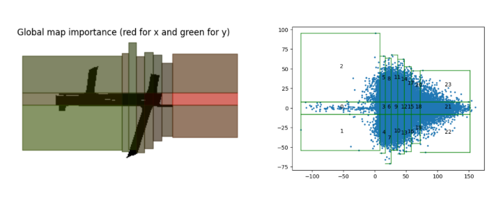

Résumé (open to work)
| Hi, my name is Yasin Yousif and currently doing my PhD in Multi-Agent Modelling for Traffic. My skills set includes using machine learning and simulation techniques to analyze complex systems. Previouslly I studied Robotics, and Mechatronics |
Academic Background
-
2020-present : PhD candidate in Informatics, TU Clausthal. RTG: Social Cars
-
2016-2019 : Msc. in Mechatronic, Lattakia. [GPA: 83%]
- Notable coursework: Programming Logic Control (Siemens PLC), Machine Vision, Optimal Control, Electrical Drives.
-
2010-2015 : B.S. in Mechatronics, Homs. [GPA: 82%]
- Graduation Project: Developed a 3D reconstruction system from images, demonstrating proficiency in computer vision and data processing.
PhD Project
-
Title: Multi-Agent Stochastic Heterogeneous Traffic Modeling with Reinforcement Learning
-
Description: This work models mixed traffic of different transportation types as a multi-agent stochastic system, aiming for accuracy and interpretability.
Master Thesis
-
Title: 3D reconstruction from 2D images using EKF-SLAM
-
Description: This research integrates covariance information derived from Visual SLAM techniques to enhance the accuracy of 3D reconstruction.
Work Experience & Practical Computer Skills
-
2021-2024 Scientific Assistant (Hiwi), Clausthal
- Assisted in teaching SQL and PHP courses
-
2017–2020 Research Assistant, Homs
- Taught courses in Computer Networks, Image Processing, and Artificial Intelligence
Practical Computer Skills
- Programming Langauges:: Python, MATLAB, C++, JavaScript.
- Applications:: Blender, Inkscape, Simatic Step 7 PLC software, Vim
- Software Libraries & Frameworks:: ROS (Robotics Operating System), PyTorch, LaTeX, MySQL, OpenCV, Jupyter Notebook, Linux.
Langauges
- English (C1: Fluent)
- German (B2: Higher intermediate)
- French (A1: Beginner)
- Arabic (Native)
Academic Services
- Reviewer:
- Robot Operating System (ROS): The Complete Reference (Volume 6)
- European Conference on Artificial Intelligence ECAI 2023
- Data-centric Machine Learning Research DMLR
- 2023 International Conference on Autonomous Agents and Multiagent Systems (AAMAS)
Awards and Scholarships
- DAAD (GSSP) Doctorate Scholarship: 2020-2024
- Excellence Award in Mechatronics (2nd in class), Homs, Syria: 2014
- Excellence Award in Mechatronics (1st in class), Homs, Syria: 2011
Technical Training
- Online Cousre: Applied Edge AI - Deep Learning Outside of the Cloud
- Online Cousre: Scientific Computing with Python Certification
- AI-DLDA: International Summer School on Artificial Intelligence
- EuroSciPy 2022 Technical Conference
Publications & Projects
| 1. Yousif, Y. M., & Müller, J. P. (2024). Integrating Supervised and Reinforcement Learning for Heterogeneous Traffic Simulation. Advances in Practical Applications of Agents, Multi-Agent Systems (PAAMS). Springer, Cham.*To appear in November* [Code] | |
| 2. Yousif, Y. M., & Müller, J. P. (2024). Adaptive Learning of Centralized and Decentralized Rewards in Multi-agent Imitation Learning. Advances in Practical Applications of Agents, Multi-Agent Systems (PAAMS). Springer, Cham. *To appear in November* [Code] | |
|  | 3. Yousif, Y. M., & Müller, J. P. (2024). Efficient and Interpretable Traffic Destination Prediction using Explainable Boosting Machines. arXiv preprint arXiv:2402.03457. [Paper] [Code] |
| 4. Mukbil, A., Yousif, Y. M., Hossain, S., & Müller, J. P. (2023, September). CTV-Dataset: A Shared Space Drone Dataset for Cyclist-Road User Interaction Derived from Campus Experiments. In 2023 IEEE 26th International Conference on Intelligent Transportation Systems (ITSC) (pp. 3186-3191). IEEE. [Dataset] | |
| 5. Yousif, Y. M., Mukbil, A., & Müller, J. P. (2022). OfflineMOT: A Python package for multiple objects detection and tracking from bird view stationary drone videos. Journal of Open Source Software, 7(74), 4099. [Paper] [Code] | |
| 6. Yousif, Y. M., & Müller, J. P. (2022). Generating Explanatory Saliency Maps for Mixed Traffic Flow using a Behaviour Cloning Model. Workshop of Multi-agent Based Sytems (MABS). [Paper] | |
| 7. Yousif, Y. M., & Hatem, I. (2021). Video Frames Selection Method for 3D Reconstruction Depending on ROS-Based Monocular SLAM. In Robot Operating System (ROS) (pp. 351-380). Springer, Cham. [Code] |